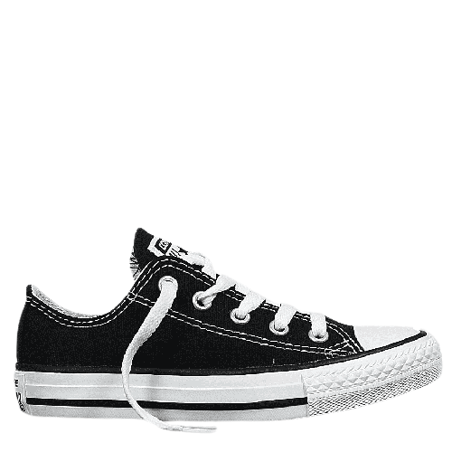
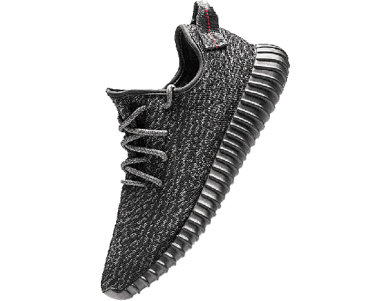
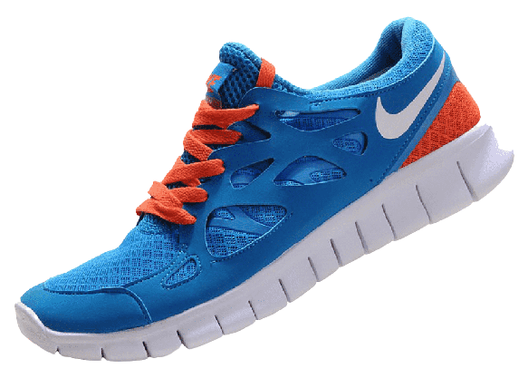

In the 1960s, Converse released their classic Chuck Taylors in bright colors for the athletes that wanted to match their shoes to their team colors. The new ability to rep your team colors made Converse the most popular shoe of the '60s.
In the '70s, Nike released the first pair of Nike Cortex sneakers. Coincidentally, they were also one of the first styles from the brand to have the iconic swoosh logo. The sneaker was seen on athletes and celebrities alike, including Farrah Fawcett in the 1976 show Charlie's Angels.
In 1985, Nike released the Air Jordan sneaker as part of a deal with then-Chicago Bulls player Michael Jordan. In just two months, Nike sold $70 million worth of the sneakers, which skyrocketed even further after Jordan won Rookie of the Year that same year.
Nike continued their streak of having the most popular sneakers into the '90s with the release of the Air Max 90. While there are over 50 models of the shoe today, they're easily recognizable by the clear window allowing you to see the pressurized air in the heel.
The most popular Vans shoe in 2000 was the Vans Slip-On. This classic style, originally released in 1977, was iconic for its simple design and canvas upper. It featured a low profile, slip-on silhouette, with a padded collar for added comfort. The shoe was available in a range of colors, favored by skaters and celebrities alike.
Dubbed the “Roshe killer” by Ye, the adidas Yeezy Boost 350 comes equipped with innovative technology. The upper utilizes adidas’ Primeknit and features an ultra-comfortable Boost cushioning system. Its sock-like fit was perfect for the era in which it was created, as the Ultraboost and NMD dominated sneaker culture, and has since become a staple of the sneaker scene.